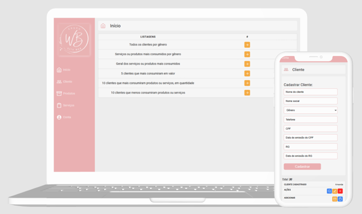

Projetos pessoais


Aplicação web de salão de beleza
Desenvolvimento de um site com o CRUD (Create, Read, Update, Delete) de clientes, produtos e serviços. Possuindo várias listagens para observar os consumos e possuindo também, relacionamento dos produtos e serviços para os cliente.
Ferramentas utilizadas:
- React
- Node
- JavaScript
- Firebase
Quer saber mais sobre mim?
Venha me conhecer